実装機能
| 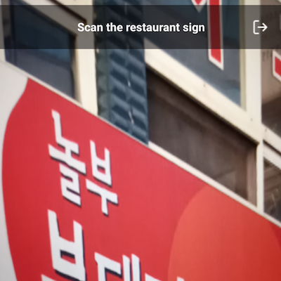 |
写真内の文字を認識する機能 写真を撮影したら、文字認識して文字を表示します。 |

|
現在の位置周辺のレストランを勧める機能 あなたの現在の場所の周りに人気のレストランがどこにあるのかを地図に示します。 |

|
食品を注文する機能 選択したレストランに食べ物を注文できます。 |

|
Be-Realの機能 制限時間内に写真を撮影した後にアップロードできます。 |
結果画面
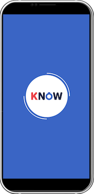


 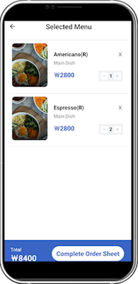
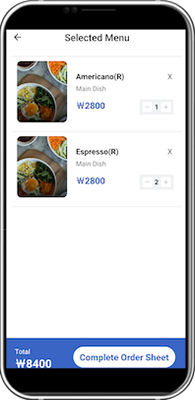


 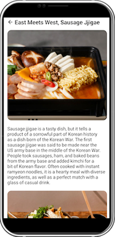
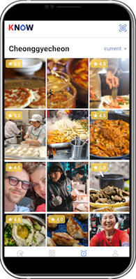
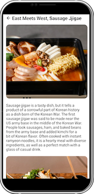
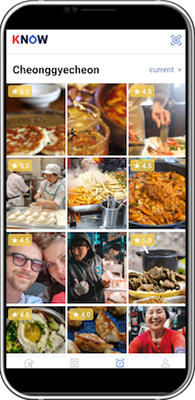

 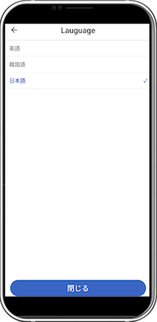
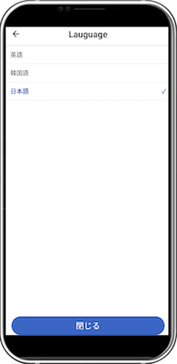
 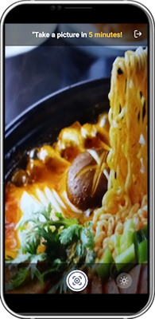
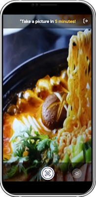

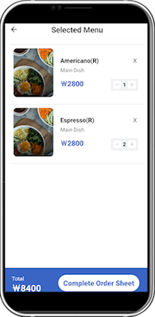
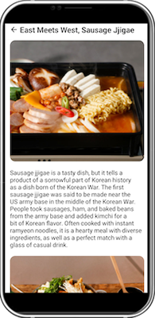
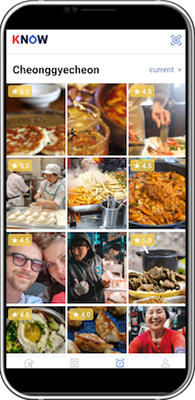
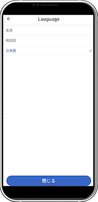
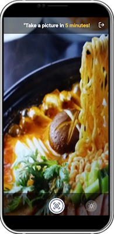
社会に貢献しようとしたこと
韓国料理をおすすめしますので、韓国を訪れる外国人がより楽しく観光できます。
韓国料理をおすすめしますので、韓国を訪れる外国人がより楽しく観光できます。
背景と目的
「KNOW」会社で働いてプロジェクトに参加しました。
「KNOW」会社で働いてプロジェクトに参加しました。
学んだこと
- Axiosでネットワーク通信、Expo-cameraで写真撮影などReact Nativeでページに機能を作る方法を学びました。
- PHPでMySQLiを使用してMySQLと連携する方法を学びました。
- サーバーがCafe24に浮上した後に連動する方法を学びました。
- 韓国観光公社、ソウル観光財団、カカオAPIを活用する方法を学びました。
能力強化のために最も努力したこと
React Native、PHPで韓国観光公社、ソウル観光財団、カカオAPIを活用
React Native、PHPで韓国観光公社、ソウル観光財団、カカオAPIを活用
全体構造及び使用技術

- React Native（Android or iOS）：ハイブリッドアプリを作りました。
- PHP：サーバーを作りました。
- MariaDB：データベースを構築し、公共データを活用しました。
- Cafe24：サーバーを浮かべるホスティングサービスとして使用しました。
開発環境
- Visual Studio Code：ハイブリッドアプリとサーバーを作るために使用しました。
- FileZilla：カフェ24にアクセスするために使用しました。
- TablePlus：DBに接続するために使用しました。
- Notion：チームメンバーと毎週の会議資料を共有するために使用しました。
- Google Drive：チームメンバーと毎週の会議資料を共有するために使用しました。
- Figma：デザイナーとのコラボレーションに使用しました。
- Google Analytics for Firebase：ユーザーのアプリの使用に関する統計を作成するために使用しました。
追加の説明
- Release

- Certificate
- （実際にビジネスをしているので、ソースコードを公開できないこと、ご了承ください。）